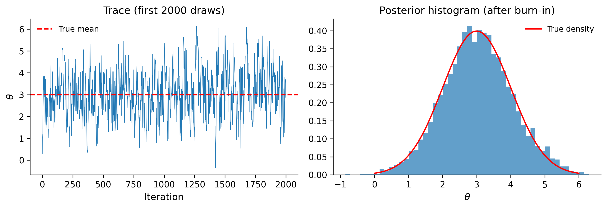
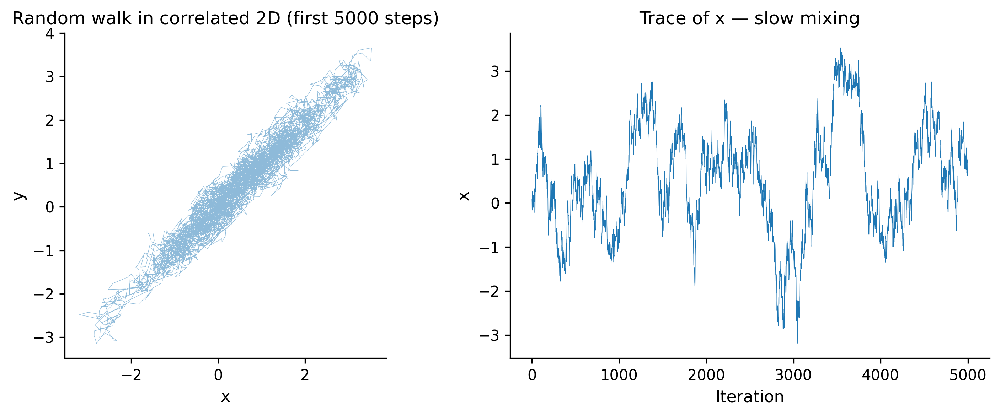
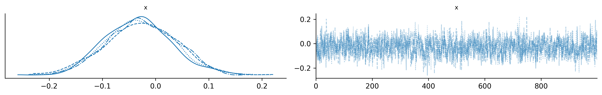
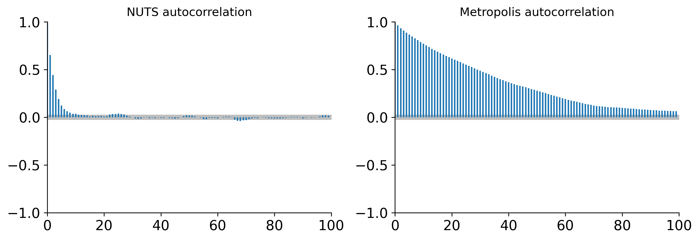
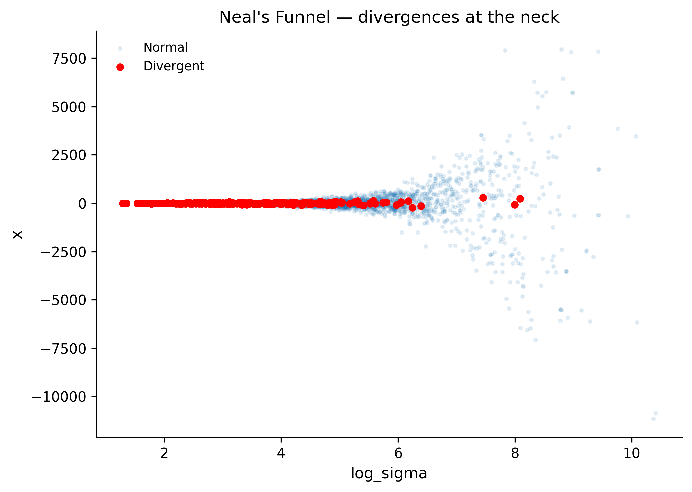
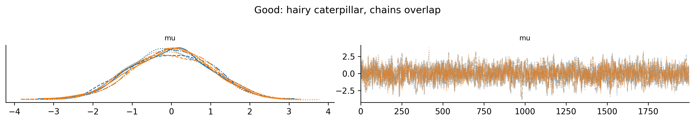
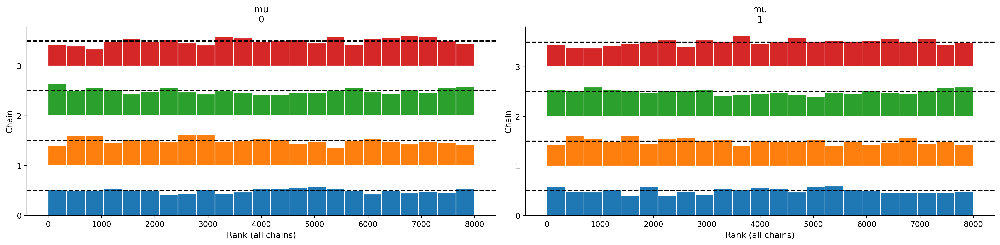
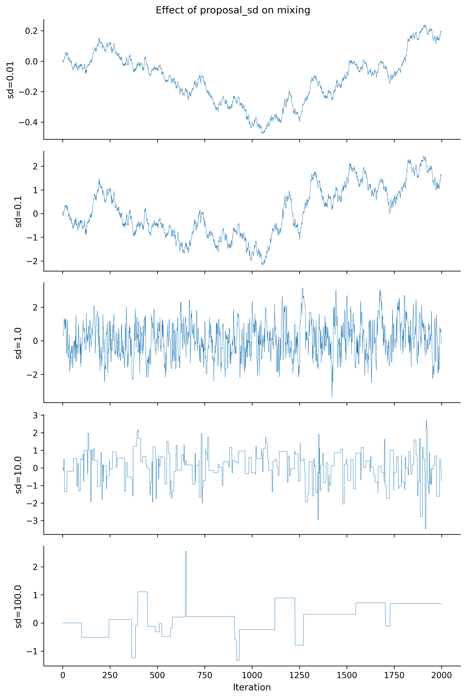
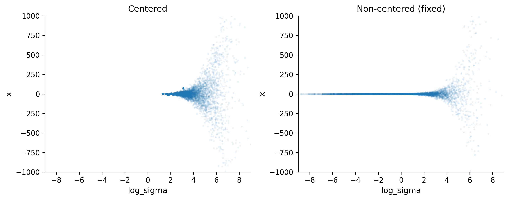

import numpy as np
from numpy.random import default_rng
rng = default_rng(42)
def metropolis_hastings(log_posterior, initial, n_samples=10_000,
proposal_sd=0.5, rng=rng):
"""Simple Metropolis-Hastings for a 1D target."""
samples = np.empty(n_samples)
current = initial
current_lp = log_posterior(current)
accepted = 0
for i in range(n_samples):
# Propose
proposal = current + rng.normal(scale=proposal_sd)
proposal_lp = log_posterior(proposal)
# Accept/reject
log_alpha = proposal_lp - current_lp
if np.log(rng.uniform()) < log_alpha:
current = proposal
current_lp = proposal_lp
accepted += 1
samples[i] = current
print(f"Acceptance rate: {accepted / n_samples:.2%}")
return samples6 MCMC: Theory, Diagnostics, and Scalability
Every model we have built so far—linear regressions, hierarchical structures, custom likelihoods—eventually arrives at the same bottleneck: we need samples from the posterior distribution, but we cannot compute it analytically. This chapter explains how PyMC draws those samples, how you verify that the samples are trustworthy, and what to do when something goes wrong.
By the end of this chapter you will be able to:
- Explain why sampling is necessary and what MCMC provides.
- Describe the Metropolis-Hastings algorithm and its limitations.
- Understand Hamiltonian Monte Carlo and the NUTS sampler at an intuitive level.
- Diagnose convergence using R-hat, ESS, divergences, and trace plots.
- Troubleshoot common sampling failures with a decision tree.
- Scale models to large datasets using the NumPyro/JAX backend.
6.1 Why MCMC?
Recall Bayes’ theorem:
\[ p(\theta \mid y) = \frac{p(y \mid \theta)\, p(\theta)}{p(y)} \]
The numerator—likelihood times prior—is easy to evaluate for any specific \(\theta\). The denominator, however, requires integrating the numerator over the entire parameter space:
\[ p(y) = \int p(y \mid \theta)\, p(\theta)\, d\theta \]
For a model with two parameters, you might pull this off numerically on a grid. For ten parameters, the grid has \(100^{10} = 10^{20}\) cells. For a hundred parameters—routine in hierarchical models—exact integration is impossible.
Markov chain Monte Carlo (MCMC) sidesteps the integral entirely. Instead of computing \(p(\theta \mid y)\) as a formula, MCMC constructs a sequence of parameter values \(\theta_1, \theta_2, \ldots, \theta_N\) such that the distribution of those values converges to the posterior. We never need \(p(y)\)—we only need the unnormalized posterior, which is the numerator we already know how to compute.
Why does this work? The key insight is that we can evaluate the unnormalized posterior at any point—we just compute likelihood * prior. What we cannot do is integrate it. MCMC exploits this by constructing a random walk that visits regions of parameter space in proportion to their posterior probability. High-probability regions get visited often; low-probability regions get visited rarely. After enough steps, the histogram of visited points approximates the posterior distribution.
The word “Markov” means each sample depends only on the previous one (not the full history). The word “chain” emphasizes that samples are correlated—unlike independent draws from numpy.random. This correlation is the price we pay for being able to sample from distributions we cannot normalize.
What MCMC gives you: Once you have posterior samples, computing any summary is trivial. The posterior mean is just np.mean(samples). A 95% credible interval is np.percentile(samples, [2.5, 97.5]). The probability that a parameter exceeds some threshold is np.mean(samples > threshold). All of Bayesian inference reduces to histogram operations on samples—no calculus required.
What MCMC costs: Samples are correlated (reducing effective information), the chain needs time to “burn in” (reach the stationary distribution), and we need diagnostics to verify convergence. The rest of this chapter addresses these costs.
Key Insight
MCMC trades an impossible integral for a simulation. We get correlated samples from the posterior, but with enough of them, expectations (means, quantiles, credible intervals) converge to the true values.
6.2 Metropolis-Hastings: The Simplest Sampler
The Metropolis-Hastings algorithm is the oldest and most intuitive MCMC method. It works like this:
- Start at some parameter value \(\theta_0\).
- Propose a new value \(\theta^*\) by adding random noise: \(\theta^* = \theta_t + \epsilon\), where \(\epsilon \sim \text{Normal}(0, \sigma^2)\).
- Compute the acceptance ratio: \(\alpha = \frac{p(y \mid \theta^*)\, p(\theta^*)}{p(y \mid \theta_t)\, p(\theta_t)}\).
- Draw \(u \sim \text{Uniform}(0, 1)\). If \(u < \alpha\), accept \(\theta^*\); otherwise stay at \(\theta_t\).
- Repeat.
The magic: because of the accept/reject step, the chain satisfies detailed balance—a mathematical condition guaranteeing that its long-run distribution equals the posterior. Detailed balance says that in the long run, the “flow” of probability from state A to state B equals the flow from B to A. When this holds for all pairs of states, the chain’s stationary distribution matches the target posterior.
Notice something remarkable: the normalizing constant \(p(y)\) cancels in the ratio at step 3. Both numerator and denominator contain it, so we never need to compute it. This is why MCMC works even though we cannot evaluate \(p(\theta \mid y)\) directly—we only need ratios of unnormalized densities.
The proposal distribution is the key tuning choice. If proposal_sd is too small, nearly every proposal is accepted (the chain barely moves). If it is too large, nearly every proposal is rejected (the chain stays stuck). The sweet spot yields an acceptance rate of about 23% for high-dimensional problems, or ~44% for a single parameter.
Let’s build this from scratch:
Now let’s test it on a simple target—a Normal(3, 1) posterior:
import matplotlib.pyplot as plt
plt.style.use("assets/book.mplstyle")
def log_normal_posterior(theta):
"""Log-density of Normal(3, 1)."""
return -0.5 * (theta - 3.0) ** 2
samples_1d = metropolis_hastings(
log_posterior=log_normal_posterior,
initial=0.0,
n_samples=10_000,
proposal_sd=1.0,
rng=rng,
)
fig, axes = plt.subplots(nrows=1, ncols=2, figsize=(10, 3.5))
# Trace plot
axes[0].plot(samples_1d[:2000], linewidth=0.5)
axes[0].axhline(y=3.0, color="red", linestyle="--", label="True mean")
axes[0].set_xlabel("Iteration")
axes[0].set_ylabel(r"$\theta$")
axes[0].set_title("Trace (first 2000 draws)")
axes[0].legend()
# Histogram
axes[1].hist(samples_1d[1000:], bins=50, density=True, alpha=0.7)
x_grid = np.linspace(0, 6, 200)
axes[1].plot(x_grid, np.exp(-0.5 * (x_grid - 3) ** 2) / np.sqrt(2 * np.pi),
color="red", label="True density")
axes[1].set_xlabel(r"$\theta$")
axes[1].set_title("Posterior histogram (after burn-in)")
axes[1].legend()
plt.tight_layout()
plt.show()Acceptance rate: 70.47%
That works beautifully for one dimension. But now watch what happens with a correlated 2D posterior:
def log_correlated_posterior(theta):
"""Log-density of a highly correlated bivariate Normal."""
# Correlation = 0.95
x, y = theta
rho = 0.95
z = (x**2 - 2 * rho * x * y + y**2) / (1 - rho**2)
return -0.5 * z
def metropolis_2d(log_posterior, initial, n_samples=50_000,
proposal_sd=0.2, rng=rng):
"""Metropolis-Hastings for a 2D target."""
samples = np.empty((n_samples, 2))
current = np.array(initial, dtype=float)
current_lp = log_posterior(current)
accepted = 0
for i in range(n_samples):
proposal = current + rng.normal(scale=proposal_sd, size=2)
proposal_lp = log_posterior(proposal)
log_alpha = proposal_lp - current_lp
if np.log(rng.uniform()) < log_alpha:
current = proposal
current_lp = proposal_lp
accepted += 1
samples[i] = current
print(f"Acceptance rate: {accepted / n_samples:.2%}")
return samples
samples_2d = metropolis_2d(
log_posterior=log_correlated_posterior,
initial=[0.0, 0.0],
n_samples=50_000,
proposal_sd=0.2,
rng=rng,
)
fig, axes = plt.subplots(nrows=1, ncols=2, figsize=(10, 4))
# First 5000 steps
axes[0].plot(samples_2d[:5000, 0], samples_2d[:5000, 1],
linewidth=0.3, alpha=0.5)
axes[0].set_xlabel("x")
axes[0].set_ylabel("y")
axes[0].set_title("Random walk in correlated 2D (first 5000 steps)")
axes[0].set_aspect("equal")
# Trace of x
axes[1].plot(samples_2d[:5000, 0], linewidth=0.4)
axes[1].set_xlabel("Iteration")
axes[1].set_ylabel("x")
axes[1].set_title("Trace of x — slow mixing")
plt.tight_layout()
plt.show()Acceptance rate: 72.26%
Notice how the random walk takes tiny steps along the narrow ridge of the correlated distribution. The chain “mixes” slowly—it takes thousands of iterations to traverse the posterior. This is the fundamental limitation of Metropolis-Hastings: it does not know the shape of the posterior. It proposes blindly.
The problem gets worse fast as dimensionality grows. Chris Fonnesbeck, one of PyMC’s core developers, explains why: “Metropolis fails in high dimensions due to the curse of dimensionality.” The root cause is geometric. In high dimensions, most of the posterior’s probability mass concentrates in a thin shell far from the mode—not at the mode itself. A random-walk proposal that is tuned for one region of this shell is almost certainly a bad fit for another. The acceptance rate collapses, and the chain effectively freezes. For a \(d\)-dimensional target, the optimal proposal scale shrinks as \(O(d^{-1/2})\), so each accepted step covers less and less ground. By the time you reach 50 or 100 parameters—routine in hierarchical models—Metropolis is practically useless.
6.3 Hamiltonian Monte Carlo
Hamiltonian Monte Carlo (HMC) fixes the random-walk problem by using gradient information. Think of it as rolling a ball across the posterior surface:
- The parameter \(\theta\) is the ball’s position.
- We give the ball a random “kick” (momentum \(p\), drawn from a Normal).
- The ball rolls according to Hamiltonian dynamics—it follows the curvature of the log-posterior surface.
- After rolling for some time, we read off the ball’s new position. That becomes our next sample.
Because the ball follows the gradient, it naturally moves along ridges and narrow valleys rather than bouncing off the walls. In our correlated 2D example, HMC would glide along the diagonal instead of random-walking across it.
The physics analogy in detail: Imagine the negative log-posterior as a landscape—a bowl-shaped valley. The parameter \(\theta\) is a hockey puck on this surface. In Metropolis, we randomly nudge the puck in any direction. In HMC, we give it a random velocity and let physics carry it. Gravity (the gradient) pulls the puck toward high-probability regions. Conservation of energy means the puck can travel far from its starting point without losing “height”—so proposals end up in high-probability regions far from the current position. That is why HMC proposes large, intelligent moves while maintaining high acceptance rates.
The Hamiltonian (total energy) is:
\[ H(\theta, p) = -\log p(\theta \mid y) + \frac{1}{2} p^T M^{-1} p \]
The first term is “potential energy” (the negative log-posterior). The second is “kinetic energy” (from the momentum). Because Hamiltonian dynamics conserve total energy, a proposal made by simulating the dynamics will have the same \(H\) as the starting point— meaning it will always be accepted (in exact arithmetic). In practice, the discrete leapfrog integrator introduces small errors, so we still apply a Metropolis correction. The acceptance rate is typically above 90%.
The “leapfrog integrator” discretizes the physics simulation into \(L\) small steps of size \(\epsilon\):
\[ \begin{aligned} p_{t+\epsilon/2} &= p_t + \frac{\epsilon}{2}\, \nabla_\theta \log p(\theta_t \mid y) \\ \theta_{t+\epsilon} &= \theta_t + \epsilon\, p_{t+\epsilon/2} \\ p_{t+\epsilon} &= p_{t+\epsilon/2} + \frac{\epsilon}{2}\, \nabla_\theta \log p(\theta_{t+\epsilon} \mid y) \end{aligned} \]
Two tuning parameters control HMC’s behavior:
- Step size \(\epsilon\): too large and the simulation explodes; too small and it moves slowly.
- Number of steps \(L\): too few and you get random-walk behavior; too many and you waste computation doubling back.
The critical requirement is that we need the gradient of the log-posterior. This is exactly what PyMC’s computational graph (via PyTensor) provides automatically through automatic differentiation. You never compute gradients by hand—when you write pm.Normal("x", mu=0, sigma=1), PyMC builds a symbolic computation graph. PyTensor (the tensor library underneath PyMC) can differentiate this graph with respect to any parameter, giving exact gradients at machine precision. This is the same technology that powers neural network training, repurposed for Bayesian inference.
The mass matrix \(M\) in the Hamiltonian is a pre-conditioning matrix that accounts for differences in scale between parameters. During the tuning phase, PyMC estimates the posterior variance of each parameter and uses it as the mass matrix. This is analogous to giving the hockey puck different “inertia” in different directions, so it moves at the right speed along each axis. Without this adaptation, a parameter measured in millimeters would dominate one measured in kilometers.
Why Gradients Matter
Metropolis-Hastings uses only the value of the log-posterior. HMC uses the value and the gradient. That extra information is what lets it explore complex posteriors efficiently—like the difference between navigating with a compass versus navigating blindfolded.
6.4 NUTS: The No-U-Turn Sampler
Standard HMC requires you to choose the number of leapfrog steps \(L\). Choose wrong and performance degrades badly. Too few steps and you get random-walk behavior (the ball barely rolls before you read its position). Too many steps and the ball rolls all the way around the posterior and comes back to where it started—wasting computation for no gain. The No-U-Turn Sampler (NUTS) eliminates this tuning parameter by automatically determining when the trajectory starts doubling back on itself—a “U-turn.”
NUTS builds a binary tree of leapfrog steps. At each level, it doubles the trajectory length (forward or backward in time). It stops when the trajectory starts returning toward the starting point—detected by checking whether the momentum vector \(p\) points back toward the initial position \(\theta_0\):
\[ p \cdot (\theta - \theta_0) < 0 \implies \text{U-turn detected, stop} \]
This criterion is cheap to evaluate and gives near-optimal trajectory lengths automatically. Short trajectories when the posterior is simple; long trajectories when it takes more rolling to traverse a complex geometry.
NUTS was introduced by Hoffman and Gelman (2014) and is now the default sampler in PyMC, Stan, and NumPyro. The reason it became the default everywhere is simple: it works well on nearly every differentiable model without manual tuning. The authors reported that NUTS matched hand-tuned HMC performance across a suite of test problems.
This is why pm.sample() “just works” in most cases. During the tuning phase (default: 1000 iterations), PyMC:
- Adapts the step size \(\epsilon\) to achieve a target acceptance rate (~0.8).
- Estimates the posterior covariance to use as a “mass matrix” (pre-conditioning).
- Uses NUTS to automatically set the path length for each draw.
import pymc as pm
import arviz as az
# A model where NUTS shines: correlated parameters
with pm.Model() as correlated_model:
# Correlated bivariate Normal
mu = pm.MvNormal(
"mu",
mu=[0, 0],
cov=[[1.0, 0.95], [0.95, 1.0]],
shape=2,
)
# Sample with NUTS (the default)
trace_nuts = pm.sample(
draws=2000,
tune=1000,
chains=4,
random_seed=42,
progressbar=True,
)
az.summary(trace_nuts, var_names=["mu"])/Users/kundeng/Dropbox/Projects/bayeslearner-learn-pymc/.venv/lib/python3.10/site-packages/rich/live.py:260:
UserWarning: install "ipywidgets" for Jupyter support
warnings.warn('install "ipywidgets" for Jupyter support')
| mean | sd | hdi_3% | hdi_97% | mcse_mean | mcse_sd | ess_bulk | ess_tail | r_hat | |
|---|---|---|---|---|---|---|---|---|---|
| mu[0] | -0.021 | 1.024 | -1.922 | 1.846 | 0.027 | 0.017 | 1474.0 | 1852.0 | 1.0 |
| mu[1] | -0.017 | 1.021 | -1.824 | 1.944 | 0.026 | 0.017 | 1481.0 | 1889.0 | 1.0 |
Compare this to Metropolis on the same model:
with correlated_model:
trace_metro = pm.sample(
draws=2000,
tune=1000,
chains=4,
step=pm.Metropolis(),
random_seed=42,
progressbar=True,
)
# Compare effective sample sizes
print("NUTS ESS:", az.ess(trace_nuts, var_names=["mu"]).to_dataframe().values)
print("Metropolis ESS:", az.ess(trace_metro, var_names=["mu"]).to_dataframe().values)/Users/kundeng/Dropbox/Projects/bayeslearner-learn-pymc/.venv/lib/python3.10/site-packages/rich/live.py:260:
UserWarning: install "ipywidgets" for Jupyter support
warnings.warn('install "ipywidgets" for Jupyter support')
NUTS ESS: [[1473.50142367]
[1480.78981706]]
Metropolis ESS: [[105.92564875]
[103.79337253]]NUTS will typically yield ESS close to the number of draws. Metropolis will produce far fewer effective samples due to the random-walk behavior.
6.5 Convergence Diagnostics: R-hat
How do you know whether your chains have converged to the posterior? You cannot prove convergence, but you can detect non-convergence. The most important diagnostic is \(\hat{R}\) (R-hat).
Intuition: Run multiple chains from different starting points. If they have all converged to the same distribution, the variation between chains should be similar to the variation within each chain.
\[ \hat{R} = \sqrt{\frac{\hat{V}}{W}} \]
where \(\hat{V}\) combines between-chain and within-chain variance, and \(W\) is the within-chain variance alone.
- \(\hat{R} \approx 1.0\): Chains agree. Good.
- \(\hat{R} > 1.01\): Mild concern. Run longer.
- \(\hat{R} > 1.1\): Serious problem. Do not trust these samples.
Let’s demonstrate with a model that fails to converge:
# A model that will struggle: mixture with well-separated modes
with pm.Model() as bimodal_model:
# This creates a bimodal posterior
x = pm.Normal("x", mu=0, sigma=1)
# Likelihood places mass at both -5 and +5
pm.Normal(
"obs",
mu=x,
sigma=0.5,
observed=np.concatenate([
rng.normal(loc=-5, scale=0.5, size=30),
rng.normal(loc=5, scale=0.5, size=30),
]),
)
trace_bimodal = pm.sample(
draws=1000,
tune=500,
chains=4,
random_seed=42,
)
print(az.summary(trace_bimodal, var_names=["x"]))/Users/kundeng/Dropbox/Projects/bayeslearner-learn-pymc/.venv/lib/python3.10/site-packages/rich/live.py:260:
UserWarning: install "ipywidgets" for Jupyter support
warnings.warn('install "ipywidgets" for Jupyter support')
mean sd hdi_3% hdi_97% mcse_mean mcse_sd ess_bulk ess_tail \
x -0.028 0.065 -0.152 0.089 0.002 0.001 1675.0 2786.0
r_hat
x 1.0 # Visualize chains
az.plot_trace(trace_bimodal, var_names=["x"])
plt.tight_layout()
plt.show()
If chains get trapped in different modes, R-hat will be large. This tells you the sampler has not explored the full posterior.
R-hat Is Necessary but Not Sufficient
\(\hat{R} \approx 1\) does not prove convergence—all chains might be stuck in the same wrong place. But \(\hat{R} > 1.01\) does prove non-convergence. Always combine R-hat with visual inspection and ESS.
6.6 Effective Sample Size (ESS)
Because MCMC samples are correlated, 4000 draws do not carry the same information as 4000 independent draws. The effective sample size quantifies how many independent draws your chain is worth:
\[ \text{ESS} = \frac{N}{1 + 2\sum_{k=1}^{\infty} \rho_k} \]
where \(\rho_k\) is the autocorrelation at lag \(k\). High autocorrelation means low ESS.
PyMC and ArviZ report two variants:
- Bulk ESS: How well you can estimate the center of the distribution (mean, median). Computed from the bulk of the distribution (roughly the middle 80%).
- Tail ESS: How well you can estimate the tails (5th and 95th percentiles). This is typically lower than bulk ESS because the tails are harder to explore.
The rule of thumb: ESS > 400 for reliable posterior summaries. If ESS is below 100, you should not trust the results at all. Here is how to interpret the numbers:
| ESS | Interpretation |
|---|---|
| > 1000 | Excellent. Posterior summaries are very precise. |
| 400–1000 | Adequate for most purposes. |
| 100–400 | Marginal. Increase draws or reparameterize. |
| < 100 | Unreliable. Do not report these results. |
ESS per second is often more informative than raw ESS. A sampler that produces 500 effective samples in 10 seconds (50 ESS/s) is better than one that produces 2000 effective samples in 300 seconds (6.7 ESS/s).
# Compare ESS for NUTS vs Metropolis
print("=== NUTS (correlated model) ===")
print(az.summary(trace_nuts, var_names=["mu"])[["ess_bulk", "ess_tail"]])
print("\n=== Metropolis (correlated model) ===")
print(az.summary(trace_metro, var_names=["mu"])[["ess_bulk", "ess_tail"]])=== NUTS (correlated model) ===
ess_bulk ess_tail
mu[0] 1474.0 1852.0
mu[1] 1481.0 1889.0
=== Metropolis (correlated model) ===
ess_bulk ess_tail
mu[0] 106.0 142.0
mu[1] 104.0 111.0# Visualize autocorrelation
fig, axes = plt.subplots(nrows=1, ncols=2, figsize=(10, 3.5))
az.plot_autocorr(trace_nuts, var_names=["mu"], ax=axes[0],
combined=True)
axes[0].set_title("NUTS autocorrelation")
az.plot_autocorr(trace_metro, var_names=["mu"], ax=axes[1],
combined=True)
axes[1].set_title("Metropolis autocorrelation")
plt.tight_layout()
plt.show()
NUTS autocorrelation drops to near zero after 1–2 lags. Metropolis autocorrelation persists for dozens or hundreds of lags. This is why NUTS gives you more information per draw.
6.7 Divergences: The Most Important Warning
When PyMC reports divergences, stop and fix the model. A divergence means the leapfrog integrator could not accurately simulate the Hamiltonian dynamics—the numerical trajectory diverged from the true one.
Thomas Wiecki offers a useful reframe: “A model is fine if the sampler is fine; divergences suggest the sampler can’t handle the geometry, not that the model is wrong.” In other words, divergences are not saying your scientific model is bad—they are saying the parameterization creates a posterior shape that the sampler cannot navigate. The fix is almost always geometric (reparameterize, adjust priors, or increase target_accept), not conceptual (throw out the model and start over).
What causes divergences?
The most common cause is a “funnel” geometry—regions where the posterior is extremely narrow in one direction. This happens with:
- Centered parameterizations of hierarchical models (Chapter 4’s non-centered trick fixes this).
- Extremely tight priors combined with data that conflicts.
- Near-zero variance components in hierarchical models.
# A model that produces divergences: the centered funnel
with pm.Model() as funnel_model:
# log-variance
log_sigma = pm.Normal("log_sigma", mu=0, sigma=3)
# When log_sigma is very negative, sigma is tiny
# and x is forced into an extremely narrow region
x = pm.Normal("x", mu=0, sigma=pm.math.exp(log_sigma))
trace_funnel = pm.sample(
draws=2000,
tune=1000,
chains=4,
random_seed=42,
target_accept=0.8,
)
# Check for divergences
divergences = trace_funnel.sample_stats["diverging"].values.sum()
print(f"Number of divergences: {divergences}")/Users/kundeng/Dropbox/Projects/bayeslearner-learn-pymc/.venv/lib/python3.10/site-packages/rich/live.py:260:
UserWarning: install "ipywidgets" for Jupyter support
warnings.warn('install "ipywidgets" for Jupyter support')
Number of divergences: 3095# Visualize where divergences occur
diverging_mask = trace_funnel.sample_stats["diverging"].values.flatten()
log_sigma_draws = trace_funnel.posterior["log_sigma"].values.flatten()
x_draws = trace_funnel.posterior["x"].values.flatten()
fig, ax = plt.subplots(figsize=(7, 5))
ax.scatter(log_sigma_draws[~diverging_mask], x_draws[~diverging_mask],
alpha=0.1, s=5, label="Normal")
ax.scatter(log_sigma_draws[diverging_mask], x_draws[diverging_mask],
color="red", s=20, label="Divergent", zorder=5)
ax.set_xlabel("log_sigma")
ax.set_ylabel("x")
ax.set_title("Neal's Funnel — divergences at the neck")
ax.legend()
plt.tight_layout()
plt.show()
The divergences cluster in the “neck” of the funnel where log_sigma is very negative (i.e., sigma is near zero). The step size that works in the wide part of the funnel is too large for the narrow part.
Fixes for divergences:
- Reparameterize (most common fix). Use the non-centered parameterization from Chapter 4:
# Non-centered version: no funnel
with pm.Model() as funnel_fixed:
log_sigma = pm.Normal("log_sigma", mu=0, sigma=3)
x_raw = pm.Normal("x_raw", mu=0, sigma=1) # Standard normal
x = pm.Deterministic("x", x_raw * pm.math.exp(log_sigma))
trace_fixed = pm.sample(
draws=2000,
tune=1000,
chains=4,
random_seed=42,
)
divergences_fixed = trace_fixed.sample_stats["diverging"].values.sum()
print(f"Divergences after fix: {divergences_fixed}")/Users/kundeng/Dropbox/Projects/bayeslearner-learn-pymc/.venv/lib/python3.10/site-packages/rich/live.py:260:
UserWarning: install "ipywidgets" for Jupyter support
warnings.warn('install "ipywidgets" for Jupyter support')
Divergences after fix: 0- Increase
target_accept(temporary band-aid). Settingtarget_accept=0.95or0.99forces a smaller step size, which lets the leapfrog integrator navigate tighter curvature without diverging. As Fonnesbeck notes, a largertarget_acceptin the range 0.9–0.99 reduces divergences at the cost of speed: smaller steps mean more leapfrog evaluations per sample, so each draw takes longer. This is a trade-off, not a free lunch—but it is often enough to eliminate a handful of stubborn divergences.
pm.sample(draws=2000, target_accept=0.95)- Use more informative priors to exclude pathological regions of parameter space.
Never Ignore Divergences
Divergences are not mere warnings—they indicate the sampler failed to explore part of the posterior. Results from a trace with many divergences are biased. Fix the model geometry first, then interpret results.
6.8 Trace Plots and Rank Plots
Visual inspection remains invaluable. Numbers like R-hat and ESS summarize convergence into scalars, but they can miss problems that are obvious to the eye—temporary sticking, slow drift, or one chain behaving differently from the rest. Always plot your traces.
6.8.1 Trace Plots
az.plot_trace() shows two panels per parameter: the posterior density (left) and the sample values over time (right). The density panel overlays all chains—if they agree, you see a single smooth curve. The trace panel shows the raw sequence of values.
What “good” looks like: The trace should look like a “hairy caterpillar”—a fat, stationary band with no trends, jumps, or stuck periods. All chains should overlap completely, like four independent noise signals with the same statistical properties.
What “bad” looks like:
- Chains at different levels (multi-modality or non-convergence).
- A chain stuck at one value for dozens of iterations (low acceptance, step size too large).
- Visible drift or trend (the chain has not reached stationarity—needs more tuning).
- One chain with a different spread (one chain found a mode the others missed).
- Periodic patterns (correlated proposals, not necessarily a problem but worth investigating).
# Good trace: well-mixed NUTS chains
az.plot_trace(trace_nuts, var_names=["mu"])
plt.suptitle("Good: hairy caterpillar, chains overlap", y=1.02)
plt.tight_layout()
plt.show()
6.8.2 Rank Plots
Rank plots are a more sensitive diagnostic than trace plots. The idea is simple: pool all draws from all chains, rank them (1 = smallest, N = largest), then plot histograms of ranks per chain. If all chains sample from the same distribution, each chain should contribute equally to all rank bins—giving a uniform histogram.
Why is this better than a trace plot? Trace plots can look “okay” even when one chain has slightly different variance than another. Rank plots make such differences jump out as systematic deviations from uniformity. They were introduced by Vehtari et al. (2021) and are now considered best practice for publication-quality diagnostics.
az.plot_rank(trace_nuts, var_names=["mu"])
plt.tight_layout()
plt.show()
Reading rank plots: Flat histograms = good mixing. If one chain consistently has high ranks (right-skewed histogram), that chain is sampling from a shifted or heavier-tailed distribution. If all chains show a U-shape, it might indicate multimodality.
6.9 Practical Troubleshooting
When sampling goes wrong, follow this decision tree:
START
│
├─ Divergences present?
│ ├─ YES → Reparameterize (non-centered)
│ │ Still diverging? → Increase target_accept to 0.95
│ │ Still diverging? → Simplify model or use more informative priors
│ └─ NO → continue
│
├─ R-hat > 1.01?
│ ├─ YES → Chains haven't mixed
│ │ Try: more tuning steps (tune=2000)
│ │ Try: better initialization (init="adapt_diag")
│ │ Try: simpler model
│ └─ NO → continue
│
├─ ESS < 400?
│ ├─ YES → Not enough effective samples
│ │ Try: more draws (draws=5000)
│ │ Try: reparameterize to reduce correlation
│ └─ NO → continue
│
└─ All diagnostics pass → Results are trustworthyCommon patterns and fixes:
| Symptom | Likely Cause | Fix |
|---|---|---|
| Many divergences | Funnel/centered parameterization | Non-centered trick |
| High R-hat | Multi-modality or slow mixing | More tuning, or rethink model |
| Low ESS, no divergences | High posterior correlation | Reparameterize |
| All chains stuck at init | Extreme prior-data conflict | Check priors, check data |
| Very slow sampling | High dimensionality | JAX/NumPyro backend |
Let’s put this into practice with a model that needs debugging:
# A hierarchical model that needs the non-centered trick
n_groups = 8
n_obs_per_group = 5
true_mu = 5.0
true_sigma = 0.5
# Generate data
group_means = rng.normal(loc=true_mu, scale=true_sigma, size=n_groups)
y = np.array([
rng.normal(loc=mu_g, scale=1.0, size=n_obs_per_group)
for mu_g in group_means
])
# Centered (problematic when n_obs is small)
with pm.Model() as centered:
mu = pm.Normal("mu", mu=0, sigma=10)
sigma = pm.HalfNormal("sigma", sigma=5)
theta = pm.Normal("theta", mu=mu, sigma=sigma, shape=n_groups)
pm.Normal(
"obs", mu=theta[:, None],
sigma=1.0, observed=y,
)
trace_centered = pm.sample(
draws=2000,
tune=1000,
chains=4,
random_seed=42,
)
divs_centered = trace_centered.sample_stats["diverging"].values.sum()
print(f"Centered model divergences: {divs_centered}")
print(az.summary(trace_centered, var_names=["sigma"])[["mean", "ess_bulk"]])/Users/kundeng/Dropbox/Projects/bayeslearner-learn-pymc/.venv/lib/python3.10/site-packages/rich/live.py:260:
UserWarning: install "ipywidgets" for Jupyter support
warnings.warn('install "ipywidgets" for Jupyter support')
Centered model divergences: 234
mean ess_bulk
sigma 0.618 901.0# Non-centered (fix)
with pm.Model() as noncentered:
mu = pm.Normal("mu", mu=0, sigma=10)
sigma = pm.HalfNormal("sigma", sigma=5)
theta_raw = pm.Normal("theta_raw", mu=0, sigma=1, shape=n_groups)
theta = pm.Deterministic("theta", mu + sigma * theta_raw)
pm.Normal(
"obs", mu=theta[:, None],
sigma=1.0, observed=y,
)
trace_noncentered = pm.sample(
draws=2000,
tune=1000,
chains=4,
random_seed=42,
)
divs_nc = trace_noncentered.sample_stats["diverging"].values.sum()
print(f"Non-centered model divergences: {divs_nc}")
print(az.summary(trace_noncentered, var_names=["sigma"])[["mean", "ess_bulk"]])/Users/kundeng/Dropbox/Projects/bayeslearner-learn-pymc/.venv/lib/python3.10/site-packages/rich/live.py:260:
UserWarning: install "ipywidgets" for Jupyter support
warnings.warn('install "ipywidgets" for Jupyter support')
Non-centered model divergences: 3
mean ess_bulk
sigma 0.601 1587.0The non-centered version eliminates (or greatly reduces) divergences and yields higher ESS for the hierarchical standard deviation sigma.
Wiecki is blunt about the current state of affairs: “Most of the problem with Bayesian stats today is all these re-parameterization tricks.” The fact that a mathematically identical model can sample beautifully or terribly depending on how you write it down is a real usability problem. Projects like automatic reparameterization aim to eliminate this manual step, but for now, knowing when and how to apply the non-centered trick is one of the most valuable practical skills in Bayesian modeling.
6.10 Scaling Up
For small-to-medium datasets (up to ~50,000 observations, ~1,000 parameters), PyMC’s default C/NumPy backend works fine. For larger problems, you can swap in the NumPyro backend, which uses JAX for just-in-time compilation and optional GPU acceleration.
6.10.1 The JAX/NumPyro Backend
JAX is Google’s library for high-performance numerical computing. It provides:
- JIT compilation: Your model is compiled to optimized machine code once, then runs at native speed for all subsequent evaluations.
- Automatic vectorization: Multiple chains can run simultaneously on one GPU.
- GPU/TPU support: The same code runs on CPU, GPU, or TPU without changes.
NumPyro is a probabilistic programming library built on JAX. PyMC can delegate its NUTS sampling to NumPyro’s implementation, getting all of JAX’s performance benefits while you keep writing models in PyMC’s familiar syntax.
# Use NumPyro backend (requires: pip install numpyro jax)
with model:
trace = pm.sample(
draws=2000,
tune=1000,
chains=4,
nuts_sampler="numpyro",
random_seed=42,
)The NumPyro backend runs the same NUTS algorithm but compiled to optimized machine code (CPU) or GPU kernels. Speedups of 5–50x are common for models with many parameters or large datasets.
6.10.2 Why Is It Faster?
The default PyMC backend evaluates the log-posterior using C code called from Python. For each leapfrog step, there is overhead from Python’s interpreter, memory allocation, and lack of fusion between operations. JAX eliminates all of this: it traces your model into a computation graph, optimizes it (fusing operations, eliminating redundant computation), and compiles it to a single optimized function. The first call is slow (compilation), but subsequent calls are extremely fast.
For hierarchical models with thousands of group-level parameters, the speedup is dramatic because JAX vectorizes operations across groups automatically. A model that takes 30 minutes with the default backend might finish in 2 minutes with NumPyro.
When each backend makes sense:
| Scenario | Backend |
|---|---|
| Small model, quick iteration | Default (PyMC/C) |
| Hierarchical model, many groups | NumPyro (JAX CPU) |
| Very large dataset, GPU available | NumPyro (JAX GPU) |
| Need to run chains in parallel on GPU | NumPyro with chain_method="vectorized" |
# Example: timing comparison (small model, for illustration)
import time
with correlated_model:
start = time.time()
_ = pm.sample(
draws=1000,
tune=500,
chains=2,
random_seed=42,
progressbar=False,
)
default_time = time.time() - start
print(f"Default backend: {default_time:.1f}s")
# Uncomment if numpyro is installed:
# with correlated_model:
# start = time.time()
# _ = pm.sample(
# draws=1000,
# tune=500,
# chains=2,
# nuts_sampler="numpyro",
# random_seed=42,
# progressbar=False,
# )
# numpyro_time = time.time() - start
#
# print(f"NumPyro backend: {numpyro_time:.1f}s")Default backend: 0.6s6.10.3 When to Use Variational Inference Instead
If your model has tens of thousands of parameters and you need approximate posteriors quickly (e.g., for model selection or quick exploration), variational inference (Chapter 11) trades exactness for speed. VI fits a simpler distribution (usually a factored Gaussian) to approximate the posterior, using optimization rather than sampling. It converges in minutes where MCMC might take hours.
The tradeoff: VI approximations can silently underestimate uncertainty, miss multimodality, and get stuck in local optima. Always validate with MCMC on a subset of your data or a simplified version of the model first. If VI and MCMC agree, you can trust VI for the full problem. If they disagree, MCMC is the ground truth.
A practical workflow for large models:
- Prototype with a random 10% subset of your data + default MCMC.
- Once the model works, scale to full data with
nuts_sampler="numpyro". - If still too slow, try VI for fast iteration, but confirm key conclusions with MCMC.
6.10.4 Installation
To use the NumPyro backend:
pip install numpyro jax jaxlibFor GPU support (NVIDIA):
pip install numpyro "jax[cuda12]"
Practical Rule
Start with pm.sample() (NUTS, default backend). If it takes more than 10 minutes, try nuts_sampler="numpyro". If it’s still too slow, consider variational inference or simplifying the model.
6.11 Summary
| Concept | What It Means | What to Do |
|---|---|---|
| MCMC | Correlated samples from the posterior | Use enough draws, check diagnostics |
| Metropolis | Simple but slow random walk | Let PyMC choose (it picks NUTS) |
| HMC/NUTS | Uses gradients, explores efficiently | Default in PyMC—trust it |
| R-hat | Chain agreement | Must be < 1.01 |
| ESS | Effective independent draws | Must be > 400 |
| Divergences | Sampler failed geometrically | Reparameterize immediately |
| Trace plots | Visual sanity check | Look for “hairy caterpillar” |
| NumPyro backend | JAX compilation + GPU | Use for large models |
6.12 Exercises
Exercise 1: Tuning Metropolis
Implement metropolis_hastings (or copy from above) and explore how proposal_sd affects performance on a Normal(0, 1) target. Try proposal_sd values of 0.01, 0.1, 1.0, 10.0, and 100.0. For each, compute the acceptance rate and effective sample size (using az.ess on an az.InferenceData object or simply by measuring autocorrelation). What is the “sweet spot”?
%%
Solution
def log_standard_normal(theta):
return -0.5 * theta**2
proposal_sds = [0.01, 0.1, 1.0, 10.0, 100.0]
fig, axes = plt.subplots(
nrows=len(proposal_sds), ncols=1, figsize=(8, 12), sharex=True
)
for i, psd in enumerate(proposal_sds):
samples = metropolis_hastings(
log_posterior=log_standard_normal,
initial=0.0,
n_samples=10_000,
proposal_sd=psd,
rng=default_rng(42),
)
axes[i].plot(samples[:2000], linewidth=0.4)
axes[i].set_ylabel(f"sd={psd}")
axes[-1].set_xlabel("Iteration")
plt.suptitle("Effect of proposal_sd on mixing")
plt.tight_layout()
plt.show()Acceptance rate: 99.91%
Acceptance rate: 96.85%
Acceptance rate: 70.49%
Acceptance rate: 12.32%
Acceptance rate: 1.23%
The sweet spot is around proposal_sd = 1.0 to 2.4 (the latter being the theoretically optimal scaling for a 1D Normal target). Too small = high acceptance but tiny steps (random walk). Too large = constant rejection (chain doesn’t move). %%
Exercise 2: Diagnosing a Bad Model
The following model has a sampling problem. Run it, identify the issue using ArviZ diagnostics, and fix it.
with pm.Model() as bad_model:
sigma = pm.HalfNormal("sigma", sigma=0.1)
mu = pm.Normal("mu", mu=0, sigma=sigma)
pm.Normal("obs", mu=mu, sigma=1, observed=rng.normal(3, 1, size=100))
trace_bad = pm.sample(draws=2000, random_seed=42)%%
Solution
# The problem: sigma has a tight HalfNormal(0.1) prior, creating a funnel.
# When sigma is near zero, mu is forced near zero --- conflict with data at 3.
# Fix: use a wider prior on sigma, or non-centered parameterization.
with pm.Model() as fixed_model:
sigma = pm.HalfNormal("sigma", sigma=5) # Wider prior
mu = pm.Normal("mu", mu=0, sigma=sigma)
pm.Normal("obs", mu=mu, sigma=1,
observed=rng.normal(loc=3, scale=1, size=100))
trace_fixed = pm.sample(draws=2000, random_seed=42)
print(az.summary(trace_fixed, var_names=["mu", "sigma"]))/Users/kundeng/Dropbox/Projects/bayeslearner-learn-pymc/.venv/lib/python3.10/site-packages/rich/live.py:260:
UserWarning: install "ipywidgets" for Jupyter support
warnings.warn('install "ipywidgets" for Jupyter support')
mean sd hdi_3% hdi_97% mcse_mean mcse_sd ess_bulk ess_tail \
mu 3.010 0.101 2.828 3.201 0.001 0.001 6059.0 5272.0
sigma 4.437 2.337 1.139 8.697 0.028 0.031 7275.0 5456.0
r_hat
mu 1.0
sigma 1.0 The original model had divergences due to the funnel created by sigma ~ HalfNormal(0.1). Widening the prior to HalfNormal(5) removes the pathological geometry. %%
Exercise 3: NUTS vs Metropolis Race
Fit the 8-schools model (Chapter 4) using both pm.NUTS() and pm.Metropolis(). Compare wall-clock time, ESS, and ESS-per-second.
%%
Solution
# 8-schools data
J = 8
y_obs = np.array([28, 8, -3, 7, -1, 1, 18, 12], dtype=float)
sigma_obs = np.array([15, 10, 16, 11, 9, 11, 10, 18], dtype=float)
with pm.Model() as schools:
mu = pm.Normal("mu", mu=0, sigma=10)
tau = pm.HalfNormal("tau", sigma=10)
theta_raw = pm.Normal("theta_raw", mu=0, sigma=1, shape=J)
theta = pm.Deterministic("theta", mu + tau * theta_raw)
pm.Normal("obs", mu=theta, sigma=sigma_obs, observed=y_obs)
# NUTS
start_nuts = time.time()
trace_n = pm.sample(
draws=2000, tune=1000, chains=4,
random_seed=42, progressbar=False,
)
time_nuts = time.time() - start_nuts
# Metropolis
start_met = time.time()
trace_m = pm.sample(
draws=2000, tune=1000, chains=4,
step=pm.Metropolis(), random_seed=42, progressbar=False,
)
time_met = time.time() - start_met
ess_nuts = az.ess(trace_n, var_names=["mu"])["mu"].values.item()
ess_met = az.ess(trace_m, var_names=["mu"])["mu"].values.item()
print(f"NUTS: {time_nuts:.1f}s, ESS(mu)={ess_nuts:.0f}, "
f"ESS/s={ess_nuts/time_nuts:.0f}")
print(f"Metropolis: {time_met:.1f}s, ESS(mu)={ess_met:.0f}, "
f"ESS/s={ess_met/time_met:.0f}")NUTS: 1.9s, ESS(mu)=5303, ESS/s=2809
Metropolis: 3.0s, ESS(mu)=1030, ESS/s=338NUTS typically achieves 10–100x higher ESS-per-second than Metropolis for this model. %%
Exercise 4: Funnel Reparameterization
Neal’s funnel is defined by: \[ \log\sigma \sim \text{Normal}(0, 3), \quad x \sim \text{Normal}(0, e^{\log\sigma}) \]
- Sample from the centered version. Record the number of divergences.
- Write the non-centered version and verify divergences disappear.
- Plot both posteriors in the
(log_sigma, x)plane. Confirm they match.
%%
Solution
# (a) Centered
with pm.Model() as funnel_c:
log_sigma = pm.Normal("log_sigma", mu=0, sigma=3)
x = pm.Normal("x", mu=0, sigma=pm.math.exp(log_sigma))
tr_c = pm.sample(
draws=2000, tune=1000, chains=4,
random_seed=42, target_accept=0.8,
)
print(f"Centered divergences: "
f"{tr_c.sample_stats['diverging'].values.sum()}")
# (b) Non-centered
with pm.Model() as funnel_nc:
log_sigma = pm.Normal("log_sigma", mu=0, sigma=3)
x_raw = pm.Normal("x_raw", mu=0, sigma=1)
x = pm.Deterministic("x", x_raw * pm.math.exp(log_sigma))
tr_nc = pm.sample(
draws=2000, tune=1000, chains=4, random_seed=42,
)
print(f"Non-centered divergences: "
f"{tr_nc.sample_stats['diverging'].values.sum()}")
# (c) Compare
fig, axes = plt.subplots(nrows=1, ncols=2, figsize=(10, 4))
ls_c = tr_c.posterior["log_sigma"].values.flatten()
x_c = tr_c.posterior["x"].values.flatten()
axes[0].scatter(ls_c, x_c, alpha=0.05, s=3)
axes[0].set_title("Centered")
axes[0].set_xlabel("log_sigma")
axes[0].set_ylabel("x")
ls_nc = tr_nc.posterior["log_sigma"].values.flatten()
x_nc = tr_nc.posterior["x"].values.flatten()
axes[1].scatter(ls_nc, x_nc, alpha=0.05, s=3)
axes[1].set_title("Non-centered (fixed)")
axes[1].set_xlabel("log_sigma")
axes[1].set_ylabel("x")
for ax in axes:
ax.set_xlim(-9, 9)
ax.set_ylim(-1000, 1000)
plt.tight_layout()
plt.show()/Users/kundeng/Dropbox/Projects/bayeslearner-learn-pymc/.venv/lib/python3.10/site-packages/rich/live.py:260:
UserWarning: install "ipywidgets" for Jupyter support
warnings.warn('install "ipywidgets" for Jupyter support')
Centered divergences: 3095/Users/kundeng/Dropbox/Projects/bayeslearner-learn-pymc/.venv/lib/python3.10/site-packages/rich/live.py:260:
UserWarning: install "ipywidgets" for Jupyter support
warnings.warn('install "ipywidgets" for Jupyter support')
Non-centered divergences: 0
The non-centered parameterization eliminates divergences and recovers the full funnel shape, including the narrow neck at low log_sigma values. %%